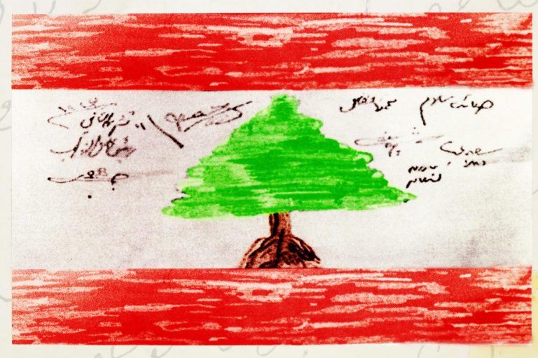
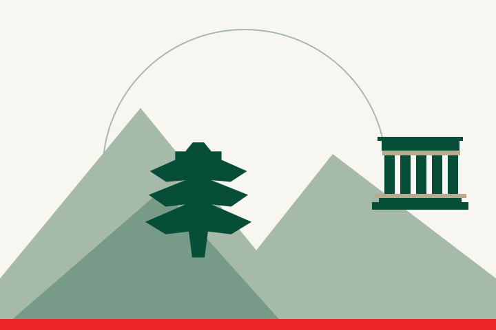
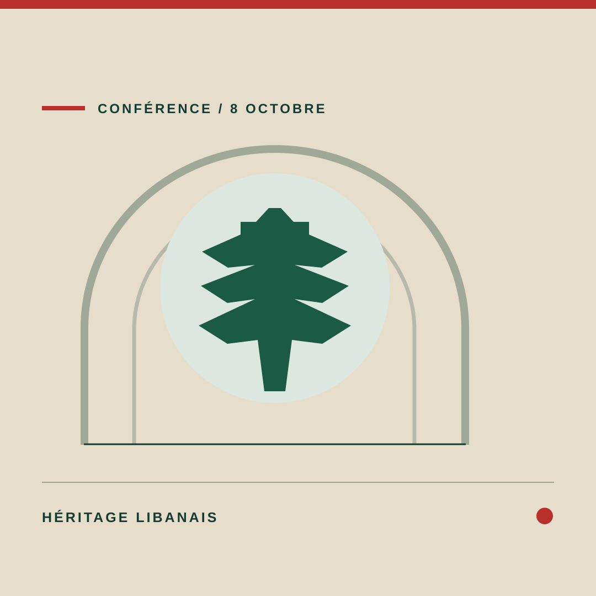

Une revue pour garder le lien
Une histoire millénaire, une culture vivante, un héritage en partage. À travers des récits et des rencontres, Héritage Libanais vous invite à découvrir le Liban, à explorer son identité et à faire vivre les liens entre les générations et les pays.

À la une

Publié sur Instagram le
Voir le récit
Publié sur Instagram le
Voir le récit
Événements

8 oct.Mairie du XVe, Paris · François Boustany et Joe Maalouf
 4 juin
4 juinMairie du XVe, Paris · Salle Saint-Lambert
Nos engagements
Éclairer l’histoire du Liban, partager la richesse de son patrimoine et donner aux nouvelles générations l’envie de se l’approprier.
Créer des occasions d’échange entre la France, le Liban et sa diaspora. Faire dialoguer les générations, les cultures et les expériences autour d’un attachement commun.
Encourager les initiatives qui rapprochent et venir en aide à la population libanaise. Faire de cet héritage une source d’engagement pour l’avenir.
À propos
Héritage Libanais est une association française engagée pour la transmission de l’identité libanaise, la francophonie et l’amitié franco-libanaise. Nous portons les valeurs de pluralisme, de citoyenneté et de liberté, avec l’attachement à un Liban indépendant, souverain et en paix.
En savoir plus sur l’associationLa lettre
La lettre réunira les nouveaux récits et les annonces de rencontres.